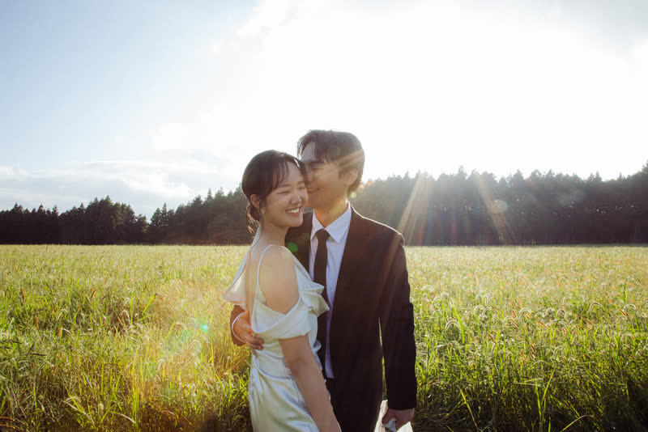

<meta charset="utf-8">
<meta name="viewport" content="width=device-width, initial-scale=1, viewport-fit=cover">
<title>진용·하림 사진</title>
<meta name="claude:viewport-fit-sides" content="cover">
<link rel="preconnect" href="https://fonts.googleapis.com">
<link rel="preconnect" href="https://fonts.gstatic.com" crossorigin>
<link href="https://fonts.googleapis.com/css2?family=Archivo:wght@500&family=Noto+Sans+KR:wght@400;500&display=swap" rel="stylesheet">
<link rel="stylesheet" href="SectionKit.css">
<style>
  /* Photos: the invitation's photo section as three strips of 35mm film hanging from the black greeting band
     (the user's reference: staggered grey film strips on paper). Photos only: no words (the user's request);
     the film's own edge print and frame numbers are drawn by CSS, so the section holds no text.

     Everything is in --film-u, 1% of one strip's width. The three strips fill the screen inside a 12px margin
     (at most 480px) with an 8px gap. Across a strip, as on real film: a 14u rebate, the 72u picture, a 14u rebate.
     Each rebate holds a column of sprocket holes (7u x 5u, eight per frame) and, on the outside, the edge print.
     A frame is 72u x 108u (2:3) with 5u of film between frames, so one frame plus its gap is 113u = 8 holes. */
  .photos--film {
    --film-u: calc((min(100vw, 480px) - 24px - 16px) / 300);
    --film-hole-pitch: calc(var(--film-u) * 14.125);
    box-sizing: border-box;
    max-width: 480px;
    margin: 0 auto;
    /* The strips start right at the black band above, as if they hang from it. */
    padding: 0 0 56px;
  }

  .film__reel {
    display: grid;
    grid-template-columns: repeat(3, calc(var(--film-u) * 100));
    justify-content: center;
    align-items: start;
    gap: 8px;
  }

  /* One strip: grey film base with the paper grain multiplied into it (a real, uneven grey, not a flat fill).
     The sprocket holes are cut out with a mask, so the paper shows through them: two hole columns tiled down
     the rebates plus a solid band over the picture column. */
  .film__strip {
    --film-hole-left: url("data:image/svg+xml,%3Csvg xmlns='http://www.w3.org/2000/svg' viewBox='0 0 14 14.125' preserveAspectRatio='none'%3E%3Cdefs%3E%3Cmask id='m'%3E%3Crect width='14' height='14.125' fill='white'/%3E%3Crect x='5' y='4.56' width='7' height='5' rx='1.1' fill='black'/%3E%3C/mask%3E%3C/defs%3E%3Crect width='14' height='14.125' mask='url(%23m)'/%3E%3C/svg%3E");
    --film-hole-right: url("data:image/svg+xml,%3Csvg xmlns='http://www.w3.org/2000/svg' viewBox='0 0 14 14.125' preserveAspectRatio='none'%3E%3Cdefs%3E%3Cmask id='m'%3E%3Crect width='14' height='14.125' fill='white'/%3E%3Crect x='2' y='4.56' width='7' height='5' rx='1.1' fill='black'/%3E%3C/mask%3E%3C/defs%3E%3Crect width='14' height='14.125' mask='url(%23m)'/%3E%3C/svg%3E");
    position: relative;
    display: flex;
    flex-direction: column;
    gap: calc(var(--film-u) * 5);
    padding: var(--film-lead) calc(var(--film-u) * 14) calc(var(--film-u) * 9);
    background: #9a9a97 url("textures/paper.png") 0 0 / 200px 200px repeat;
    background-blend-mode: multiply;
    -webkit-mask:
      var(--film-hole-left) left top / calc(var(--film-u) * 14) var(--film-hole-pitch) repeat-y,
      var(--film-hole-right) right top / calc(var(--film-u) * 14) var(--film-hole-pitch) repeat-y,
      linear-gradient(#000, #000) center / calc(var(--film-u) * 72) 100% no-repeat;
    mask:
      var(--film-hole-left) left top / calc(var(--film-u) * 14) var(--film-hole-pitch) repeat-y,
      var(--film-hole-right) right top / calc(var(--film-u) * 14) var(--film-hole-pitch) repeat-y,
      linear-gradient(#000, #000) center / calc(var(--film-u) * 72) 100% no-repeat;
  }

  /* Each strip is a different cut of the same roll: it starts at a different height (--film-lead, the film
     above its first frame) and carries its own run of frame numbers, so the ends fall at different heights. */
  .film__strip--left {
    --film-lead: calc(var(--film-u) * 46);
    counter-reset: film-frame 3;
  }

  .film__strip--middle {
    --film-lead: calc(var(--film-u) * 12);
    counter-reset: film-frame 16;
  }

  .film__strip--right {
    --film-lead: calc(var(--film-u) * 78);
    counter-reset: film-frame 29;
  }

  .film__frame {
    appearance: none;
    -webkit-appearance: none;
    position: relative;
    display: block;
    width: calc(var(--film-u) * 72);
    height: calc(var(--film-u) * 108);
    margin: 0;
    padding: 0;
    border: 0;
    border-radius: 0;
    counter-increment: film-frame;
    /* Unexposed film holds the place until the photo arrives. */
    background: #6f6f6c;
    cursor: zoom-in;
    -webkit-tap-highlight-color: transparent;
  }

  .film__frame img {
    display: block;
    width: 100%;
    height: 100%;
    object-fit: cover;
    object-position: var(--pos, 50% 50%);
  }

  /* Edge print, read along the strip in the outer 5u of each rebate, dark on the grey base: the frame number
     and a made-up stock name on the right, the half-frame number on the left. */
  .film__frame::before,
  .film__frame::after {
    position: absolute;
    top: 0;
    width: calc(var(--film-u) * 5);
    height: 100%;
    font-family: "Archivo", sans-serif;
    font-size: calc(var(--film-u) * 4);
    font-weight: 500;
    line-height: calc(var(--film-u) * 5);
    letter-spacing: 0.08em;
    white-space: nowrap;
    color: #3e3e3c;
    writing-mode: vertical-rl;
    pointer-events: none;
  }

  .film__frame::after {
    content: counter(film-frame) "\2003\2003" "JINYONG HARIM 0306";
    left: calc(100% + var(--film-u) * 9);
    padding-top: calc(var(--film-u) * 6);
  }

  .film__frame::before {
    content: counter(film-frame) "A";
    right: calc(100% + var(--film-u) * 9);
    padding-top: calc(var(--film-u) * 70);
    transform: rotate(180deg);
  }

  /* Keyboard focus: a plain pencil line around the frame (no shadow). */
  .film__frame:focus {
    outline: none;
  }

  .film__frame:focus-visible {
    outline: 2px solid var(--pencil);
    outline-offset: -2px;
  }

  /* Full view: the same paper covers the screen and the one photo sits on it whole. No dark backdrop.
     Tap anywhere, press Esc or go back to put it away. */
  /* --viewer-h is the screen height: 100vh where svh is unknown, the small viewport height where it is
     (a custom property holding 100svh is never invalid at parse time, so it needs @supports, not a fallback line). */
  .film__viewer {
    --viewer-h: 100vh;
    position: fixed;
    inset: 0;
    z-index: 100;
    display: grid;
    place-items: center;
    overscroll-behavior: contain;
    background: var(--paper) url("textures/paper.png") 0 0 / 200px 200px repeat;
  }

  @supports (height: 100svh) {
    .film__viewer {
      --viewer-h: 100svh;
    }
  }

  /* The small copy shows through as the background until the original has loaded over it. */
  .film__viewer-image {
    display: block;
    width: min(
      calc(100vw - 2 * max(24px, env(safe-area-inset-left, 0px))),
      calc((var(--viewer-h) - 2 * max(40px, env(safe-area-inset-top, 0px))) * var(--viewer-ratio, 1)),
      760px
    );
    height: auto;
    aspect-ratio: var(--viewer-ratio, 1);
    background-size: 100% 100%;
    pointer-events: none;
  }

  .film__viewer-close {
    appearance: none;
    position: absolute;
    inset: 0;
    z-index: 1;
    width: 100%;
    height: 100%;
    margin: 0;
    padding: 0;
    border: 0;
    background: transparent;
    cursor: zoom-out;
    -webkit-tap-highlight-color: transparent;
    outline: none;
  }

  @media (prefers-reduced-motion: no-preference) {
    .film__viewer:not([hidden]) {
      animation: film-viewer-in 180ms ease-out;
    }

    @keyframes film-viewer-in {
      from {
        opacity: 0;
      }
    }
  }
</style>

<section class="photos photos--film" aria-label="사진">
  <div data-film class="film__reel">
    <div class="film__strip film__strip--left">
      <button type="button" data-photo class="film__frame"></button>
      <button type="button" data-photo class="film__frame" style="--pos: 45% 50%"></button>
      <button type="button" data-photo class="film__frame"></button>
    </div>
    <div class="film__strip film__strip--middle">
      <button type="button" data-photo class="film__frame"></button>
      <button type="button" data-photo class="film__frame" style="--pos: 56% 50%"></button>
      <button type="button" data-photo class="film__frame"></button>
      <button type="button" data-photo class="film__frame" style="--pos: 48% 50%"></button>
      <button type="button" data-photo class="film__frame"></button>
      <button type="button" data-photo class="film__frame"></button>
    </div>
    <div class="film__strip film__strip--right">
      <button type="button" data-photo class="film__frame"></button>
      <button type="button" data-photo class="film__frame" style="--pos: 48% 50%"></button>
      <button type="button" data-photo class="film__frame" style="--pos: 43% 50%"></button>
      <button type="button" data-photo class="film__frame"></button>
      <button type="button" data-photo class="film__frame" style="--pos: 50% 50%"></button>
    </div>
  </div>
  <div class="film__viewer" id="photos-viewer" role="dialog" aria-modal="true" aria-label="사진 크게 보기" aria-describedby="photos-viewer-image" hidden>
    
    <button class="film__viewer-close" id="photos-viewer-close" type="button" aria-label="닫기"></button>
  </div>
</section>

<script src="SectionKit.js"></script>
<script>
  (() => {
    // Full view of one photo on the paper.
    // The photos and their places are all in the markup; this only opens and closes the view.
    // Wrapped in its own scope so nothing leaks into the page's globals.
    const VIEWER_TAP_GUARD_MS = 350;
    const viewer = document.getElementById('photos-viewer');
    const viewerImage = document.getElementById('photos-viewer-image');
    const viewerClose = document.getElementById('photos-viewer-close');
    const photoButtons = [...document.querySelectorAll('[data-film] [data-photo]')];
    let viewerOpenedAt = 0;
    let viewerReturnFocus = null;
    // True while the open view has its own history entry, so Android's back button closes it.
    let viewerInHistory = false;

    // photos/photo-07-sm.jpg -> photos/photo-07.jpg (the 1600px original).
    const getOriginalSource = (smallSource) => {
      return smallSource.replace(/-sm\.jpg$/, '.jpg');
    };

    const handleViewerImageLoad = () => {
      viewerImage.style.backgroundImage = '';
    };

    const openViewer = (button) => {
      const thumb = button.querySelector('img');
      const width = Number(thumb.getAttribute('width'));
      const height = Number(thumb.getAttribute('height'));

      viewerOpenedAt = performance.now();
      viewerReturnFocus = button;
      viewerImage.style.setProperty('--viewer-ratio', (width / height).toFixed(4));
      viewerImage.style.backgroundImage = `url("${thumb.currentSrc || thumb.src}")`;
      viewerImage.alt = thumb.alt;
      viewerImage.setAttribute('src', getOriginalSource(thumb.getAttribute('src')));
      viewer.hidden = false;
      document.documentElement.style.overflow = 'hidden';
      viewerClose.focus({ preventScroll: true });

      try {
        window.history.pushState({ photosViewer: true }, '');
        viewerInHistory = true;
      } catch {
        viewerInHistory = false;
      }
    };

    const closeViewer = () => {
      if (viewer.hidden) {
        return;
      }

      viewer.hidden = true;
      document.documentElement.style.overflow = '';

      if (viewerReturnFocus) {
        viewerReturnFocus.focus({ preventScroll: true });
      }

      viewerReturnFocus = null;

      // Closed by tap or Esc: step back over the entry the view pushed. The popstate that follows is ignored.
      if (viewerInHistory) {
        viewerInHistory = false;
        window.history.back();
      }
    };

    const handlePhotoClick = (event) => {
      openViewer(event.currentTarget);
    };

    // The back button (or gesture) while the view is open closes the view instead of leaving the page.
    const handleViewerPopState = () => {
      if (!viewerInHistory) {
        return;
      }

      viewerInHistory = false;
      closeViewer();
    };

    const handleViewerClick = () => {
      // A held Enter repeats on the close button straight after opening; that must not close the view.
      if (performance.now() - viewerOpenedAt < VIEWER_TAP_GUARD_MS) {
        return;
      }

      closeViewer();
    };

    const handleDocumentKeyDown = (event) => {
      if (viewer.hidden) {
        return;
      }

      if (event.key === 'Escape') {
        event.preventDefault();
        closeViewer();
      }

      // The close button is the only stop inside the dialog, so Tab stays on it.
      if (event.key === 'Tab') {
        event.preventDefault();
        viewerClose.focus({ preventScroll: true });
      }
    };

    photoButtons.forEach((button) => {
      button.addEventListener('click', handlePhotoClick);
    });
    viewer.addEventListener('click', handleViewerClick);
    viewerImage.addEventListener('load', handleViewerImageLoad);
    document.addEventListener('keydown', handleDocumentKeyDown);
    window.addEventListener('popstate', handleViewerPopState);
  })();
</script>
